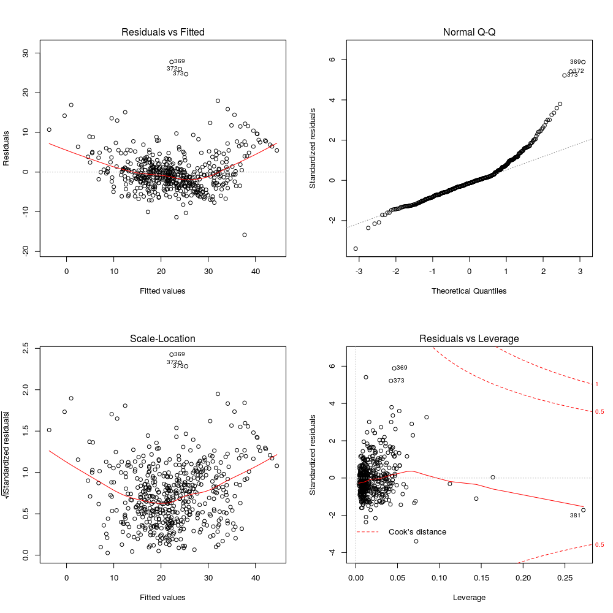

3.
Modeling
Now comes the fun part: finding a linear regression model that best fits our data.
Model 1: All In
Going all in with the data.
fit1 <- lm(MEDV ~ ., data = boston.df)
summary(fit1)
bptest(fit1) # checking for homoskedasticity
# p-value is very small so our assumption for homoskedasticity is valid
vif(fit1) # checking multicollinearity
> pairs(boston.df)
> # model 1
> fit1 <- lm(MEDV ~ ., data = boston.df)
> summary(fit1)
Call:
lm(formula = MEDV ~ ., data = boston.df)
Residuals:
Min 1Q Median 3Q Max
-15.5857 -2.7248 -0.5114 1.7846 26.2018
Coefficients:
Estimate Std. Error t value Pr(>|t|)
(Intercept) 3.648e+01 5.105e+00 7.147 3.23e-12 ***
CRIM -1.071e-01 3.277e-02 -3.268 0.001159 **
ZN 4.636e-02 1.373e-02 3.377 0.000791 ***
INDUS 2.090e-02 6.150e-02 0.340 0.734161
CHAS1 2.690e+00 8.617e-01 3.122 0.001905 **
NOX -1.780e+01 3.821e+00 -4.658 4.12e-06 ***
RM 3.809e+00 4.180e-01 9.113 < 2e-16 ***
AGE 7.256e-04 1.321e-02 0.055 0.956225
DIS -1.475e+00 1.995e-01 -7.396 6.11e-13 ***
RAD 3.053e-01 6.632e-02 4.604 5.29e-06 ***
TAX -1.233e-02 3.761e-03 -3.278 0.001120 **
PTRATIO -9.531e-01 1.308e-01 -7.284 1.29e-12 ***
B 9.330e-03 2.686e-03 3.474 0.000558 ***
LSTAT -5.253e-01 5.070e-02 -10.361 < 2e-16 ***
---
Signif. codes: 0 ‘***’ 0.001 ‘**’ 0.01 ‘*’ 0.05 ‘.’ 0.1 ‘ ’ 1
Residual standard error: 4.746 on 492 degrees of freedom
Multiple R-squared: 0.7406, Adjusted R-squared: 0.7337
F-statistic: 108 on 13 and 492 DF, p-value: < 2.2e-16
> bptest(fit1) # checking for homoskedasticity
studentized Breusch-Pagan test
data: fit1
BP = 65.045, df = 13, p-value = 6.47e-09
> # p-value is very small so our assumption for homoskedasticity is valid
> vif(fit1)
CRIM ZN INDUS CHAS1 NOX RM AGE DIS RAD TAX PTRATIO B
1.7776 2.2984 3.9912 1.0739 4.3951 1.9338 3.1008 3.9562 7.4769 9.0085 1.7992 1.3481
LSTAT
2.9391
Model 2: Removing Collinear Variable (TAX)
fit2 <- update(fit1, ~ . - TAX)
vif(fit2) # collinearity seems to no longer be an issue
summary(fit2)
> fit2 <- update(fit1, ~ . - TAX)
> vif(fit2) # collinearity seems to no longer be an issue
CRIM ZN INDUS CHAS1 NOX RM AGE DIS RAD PTRATIO B LSTAT
1.7773 2.1840 3.2255 1.0581 4.3707 1.9232 3.0981 3.9547 2.8316 1.7889 1.3471 2.9384
> summary(fit2)
Call:
lm(formula = MEDV ~ CRIM + ZN + INDUS + CHAS + NOX + RM + AGE +
DIS + RAD + PTRATIO + B + LSTAT, data = boston.df)
Residuals:
Min 1Q Median 3Q Max
-16.1361 -2.9142 -0.5677 1.7473 26.3135
Coefficients:
Estimate Std. Error t value Pr(>|t|)
(Intercept) 3.465e+01 5.124e+00 6.763 3.85e-11 ***
CRIM -1.059e-01 3.309e-02 -3.199 0.001466 **
ZN 3.632e-02 1.351e-02 2.688 0.007441 **
INDUS -6.740e-02 5.583e-02 -1.207 0.227909
CHAS1 3.032e+00 8.637e-01 3.510 0.000489 ***
NOX -1.873e+01 3.848e+00 -4.868 1.52e-06 ***
RM 3.911e+00 4.209e-01 9.291 < 2e-16 ***
AGE -5.717e-04 1.334e-02 -0.043 0.965820
DIS -1.488e+00 2.014e-01 -7.388 6.40e-13 ***
RAD 1.340e-01 4.121e-02 3.250 0.001232 **
PTRATIO -9.855e-01 1.318e-01 -7.479 3.45e-13 ***
B 9.564e-03 2.711e-03 3.528 0.000459 ***
LSTAT -5.228e-01 5.119e-02 -10.212 < 2e-16 ***
---
Signif. codes: 0 ‘***’ 0.001 ‘**’ 0.01 ‘*’ 0.05 ‘.’ 0.1 ‘ ’ 1
Residual standard error: 4.793 on 493 degrees of freedom
Multiple R-squared: 0.7349, Adjusted R-squared: 0.7285
F-statistic: 113.9 on 12 and 493 DF, p-value: < 2.2e-16
Model 3: Removing Non-Significant Variables (AGE, INDUS, RAD)
fit3 <- update(fit2, ~ . - AGE - INDUS - RAD)
summary(fit3)
> summary(fit3)
Call:
lm(formula = MEDV ~ CRIM + ZN + CHAS + NOX + RM + DIS + PTRATIO +
B + LSTAT, data = boston.df)
Residuals:
Min 1Q Median 3Q Max
-15.7992 -2.8295 -0.6366 1.4538 27.7639
Coefficients:
Estimate Std. Error t value Pr(>|t|)
(Intercept) 29.532746 4.871753 6.062 2.66e-09 ***
CRIM -0.060875 0.030320 -2.008 0.045211 *
ZN 0.041990 0.013420 3.129 0.001858 **
CHAS1 3.031435 0.868341 3.491 0.000524 ***
NOX -16.108765 3.231948 -4.984 8.61e-07 ***
RM 4.148616 0.407676 10.176 < 2e-16 ***
DIS -1.431863 0.188629 -7.591 1.59e-13 ***
PTRATIO -0.839130 0.117312 -7.153 3.07e-12 ***
B 0.008304 0.002687 3.090 0.002115 **
LSTAT -0.525271 0.048333 -10.868 < 2e-16 ***
---
Signif. codes: 0 ‘***’ 0.001 ‘**’ 0.01 ‘*’ 0.05 ‘.’ 0.1 ‘ ’ 1
Residual standard error: 4.833 on 496 degrees of freedom
Multiple R-squared: 0.7288, Adjusted R-squared: 0.7239
F-statistic: 148.1 on 9 and 496 DF, p-value: < 2.2e-16
Model 4: Removing Outliers and High-Leverage Points
outlierTest(fit3, cutoff = Inf, n.max = 15)
# removing rows with outliers and high-leverage points
boston.df <- boston.df[-c(369, 372, 373, 370, 413, 365, 371, 366, 187, 375),]
# model 4
fit4 <- lm(MEDV ~ . - TAX - AGE - INDUS - RAD, data = boston.df)
summary(fit4)
par(mfrow = c(2,2))
plot(fit4)
> # checking for outliers and high-leverage points
> outlierTest(fit3, cutoff = Inf, n.max = 15)
rstudent unadjusted p-value Bonferonni p
369 6.092529 2.2351e-09 1.1310e-06
372 5.574201 4.0923e-08 2.0707e-05
373 5.359796 1.2797e-07 6.4753e-05
370 3.850413 1.3339e-04 6.7495e-02
413 3.640090 3.0121e-04 1.5241e-01
365 -3.430779 6.5219e-04 3.3001e-01
371 3.393272 7.4602e-04 3.7749e-01
366 3.296554 1.0491e-03 5.3084e-01
187 3.036950 2.5159e-03 NA
375 3.030376 2.5703e-03 NA
368 2.925366 3.5985e-03 NA
215 2.745190 6.2675e-03 NA
254 2.642637 8.4869e-03 NA
162 2.563096 1.0669e-02 NA
229 2.466038 1.4000e-02 NA
> fit4 <- lm(MEDV ~ . - TAX - AGE - INDUS - RAD, data = boston.df)
> summary(fit4)
Call:
lm(formula = MEDV ~ . - TAX - AGE - INDUS - RAD, data = boston.df)
Residuals:
Min 1Q Median 3Q Max
-15.7992 -2.8295 -0.6366 1.4538 27.7639
Coefficients:
Estimate Std. Error t value Pr(>|t|)
(Intercept) 29.532746 4.871753 6.062 2.66e-09 ***
CRIM -0.060875 0.030320 -2.008 0.045211 *
ZN 0.041990 0.013420 3.129 0.001858 **
CHAS1 3.031435 0.868341 3.491 0.000524 ***
NOX -16.108765 3.231948 -4.984 8.61e-07 ***
RM 4.148616 0.407676 10.176 < 2e-16 ***
DIS -1.431863 0.188629 -7.591 1.59e-13 ***
PTRATIO -0.839130 0.117312 -7.153 3.07e-12 ***
B 0.008304 0.002687 3.090 0.002115 **
LSTAT -0.525271 0.048333 -10.868 < 2e-16 ***
---
Signif. codes: 0 ‘***’ 0.001 ‘**’ 0.01 ‘*’ 0.05 ‘.’ 0.1 ‘ ’ 1
Residual standard error: 4.833 on 496 degrees of freedom
Multiple R-squared: 0.7288, Adjusted R-squared: 0.7239
F-statistic: 148.1 on 9 and 496 DF, p-value: < 2.2e-16

Here we see that the residuals of our model display a normal distribution.
Diagnosing Residuals (Checking for Normality of Residuals)
studentizedResiduals <- studres(fit4)
par(mfrow = c(1,1))
hist(studentizedResiduals, freq = FALSE, main = "Distribution of Studentized Residuals")
xfit <- seq(min(studentizedResiduals), max(studentizedResiduals), length = 40)
yfit <- dnorm(xfit)
lines(xfit, yfit)
Here we see that the residuals of our model display a normal distribution.
...
Model 5: Adding Non-Linear Terms
# fiting exponential term to our model
fit5 <- lm(MEDV ~ . - TAX - AGE - INDUS - RAD + I(LSTAT^2), data = boston.df)
summary(fit5)
par(mfrow = c(2,2))
plot(fit5)
> fit5 <- lm(MEDV ~ . - TAX - AGE - INDUS - RAD + I(LSTAT^2), data = boston.df)
> summary(fit5)
Call:
lm(formula = MEDV ~ . - TAX - AGE - INDUS - RAD + I(LSTAT^2),
data = boston.df)
Residuals:
Min 1Q Median 3Q Max
-17.6471 -2.5847 -0.3352 1.7561 25.9850
Coefficients:
Estimate Std. Error t value Pr(>|t|)
(Intercept) 35.556951 4.462281 7.968 1.12e-14 ***
CRIM -0.101108 0.027808 -3.636 0.000306 ***
ZN 0.018954 0.012390 1.530 0.126687
CHAS1 2.855644 0.788706 3.621 0.000324 ***
NOX -11.500117 2.968645 -3.874 0.000122 ***
RM 3.542379 0.374834 9.451 < 2e-16 ***
DIS -1.307193 0.171716 -7.613 1.37e-13 ***
PTRATIO -0.661717 0.107907 -6.132 1.77e-09 ***
B 0.007048 0.002443 2.885 0.004091 **
LSTAT -1.690354 0.121129 -13.955 < 2e-16 ***
I(LSTAT^2) 0.033604 0.003256 10.320 < 2e-16 ***
---
Signif. codes: 0 ‘***’ 0.001 ‘**’ 0.01 ‘*’ 0.05 ‘.’ 0.1 ‘ ’ 1
Residual standard error: 4.388 on 495 degrees of freedom
Multiple R-squared: 0.7768, Adjusted R-squared: 0.7723
F-statistic: 172.3 on 10 and 495 DF, p-value: < 2.2e-16

Here we see that the residuals of our model display a normal distribution.
...
Model 6: More Non-Linearity
# lstat to the third-power
fit6 <- lm(MEDV ~ . - TAX - AGE - INDUS - RAD + I(LSTAT^2) + I(LSTAT^3), data = boston.df)
summary(fit6)
> fit6 <- lm(MEDV ~ . - TAX - AGE - INDUS - RAD + I(LSTAT^2) + I(LSTAT^3), data = boston.df)
> summary(fit6)
Call:
lm(formula = MEDV ~ . - TAX - AGE - INDUS - RAD + I(LSTAT^2) +
I(LSTAT^3), data = boston.df)
Residuals:
Min 1Q Median 3Q Max
-17.0451 -2.5311 -0.3196 1.8088 26.3462
Coefficients:
Estimate Std. Error t value Pr(>|t|)
(Intercept) 4.020e+01 4.966e+00 8.095 4.48e-15 ***
CRIM -1.013e-01 2.771e-02 -3.655 0.000285 ***
ZN 1.468e-02 1.251e-02 1.173 0.241251
CHAS1 2.757e+00 7.874e-01 3.501 0.000505 ***
NOX -1.198e+01 2.967e+00 -4.037 6.28e-05 ***
RM 3.266e+00 3.961e-01 8.245 1.51e-15 ***
DIS -1.293e+00 1.713e-01 -7.551 2.10e-13 ***
PTRATIO -6.736e-01 1.077e-01 -6.255 8.60e-10 ***
B 7.151e-03 2.436e-03 2.936 0.003479 **
LSTAT -2.295e+00 3.120e-01 -7.355 7.99e-13 ***
I(LSTAT^2) 7.337e-02 1.920e-02 3.821 0.000150 ***
I(LSTAT^3) -7.454e-04 3.548e-04 -2.101 0.036147 *
---
Signif. codes: 0 ‘***’ 0.001 ‘**’ 0.01 ‘*’ 0.05 ‘.’ 0.1 ‘ ’ 1
Residual standard error: 4.373 on 494 degrees of freedom
Multiple R-squared: 0.7788, Adjusted R-squared: 0.7739
F-statistic: 158.1 on 11 and 494 DF, p-value: < 2.2e-16

Here we see that the residuals of our model display a normal distribution.
...